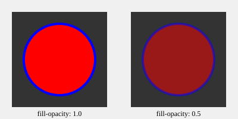

External SVG file (test-opacity.svg)

fill-opacity: 1.0 (opaque)
fill-opacity: 0.5 (semi-transparent)
fill-opacity: 0.25 (very transparent)
stroke-opacity: 1.0
stroke-opacity: 0.5
Both: fill-opacity 0.5 + stroke-opacity 0.5